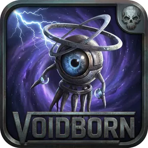

See it first
A recording of Voidborn 1.0 in play – the armies, the factories, the build panel and the unit forge doing their thing.

26 minutes on YouTube.

Voidborn is its own game, not a mod of another one: you need the Spring engine and two files. Everything is free, there is no account, no launcher and nothing to buy.
The easiest way into Voidborn is the game's page on the Coilbox hub – it has the game, the map, the faction art and the running servers in one place, and it works the same for a game against the bot and for a game against other people.
voidborn.sdz goes into the games/ folder of your engine data
directory, voidborn_rift.sd7 into maps/. Everything else is inside the archive.spring Voidborn 0.15.sdz Play_Choir_vs_Bot.txt, or pick the game in the launcher and play against the bot.~/.var/app/info.beyondallreason.bar/data/engine/<version>/ – the folder that already holds BAR's own
games/ and maps/. Copy the files there. You may have to start the game from a Flatpak shell.
The game archive and the map are in the repository. Grab them straight from here, or clone the repository and
run python3 build_sdz.py to build the archive yourself from the sources.
The whole game: units, weapons, scripts, the interface and the map generator.
Unpack it into the games/ folder of your engine data directory.
Voidborn Rift, the official arena: two tiered home asteroids, a central Eye and
islands of ore. Put it into the maps/ folder.
Ready-made matches. Play_* starts you against the bot,
Watch_Bot_vs_Bot.txt sends two bots at each other so you can just watch.
A recording of Voidborn 1.0 in play – the armies, the factories, the build panel and the unit forge doing their thing.
26 minutes on YouTube.
Voidborn is played through SkyLobby, the lobby client for Spring engine games (it is the successor to SpringLobby). Install it, point it at your engine directory and it lists every running Voidborn server. The servers are listed on the Coilbox hub as well – that page is the shortest way to a match, for one player against the bot and for several players alike.
SkyLobby lists the live servers with their map, the teams that are free and how long the match has been running. Join with two clicks. The hub page lists the same servers next to the game itself, so you can look at the factions and the unit encyclopedia while you decide.
Run the engine as a host, open the port and the server shows up in the lobby for everybody else. We are looking for volunteer 24/7 hosts – if you can keep one running, join the Discord and say so.
Every match is a start script, so you can also connect directly to a server address if someone gives you one.
The unit forge is available to everybody, but the free /vbcreate console needs cheats or a single player.